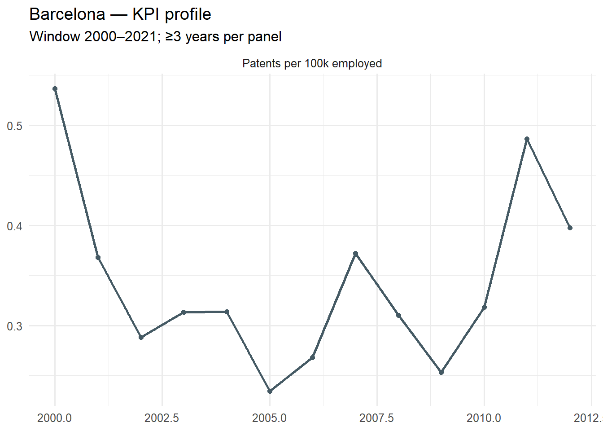
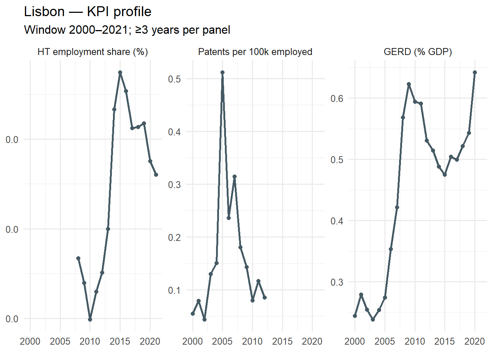
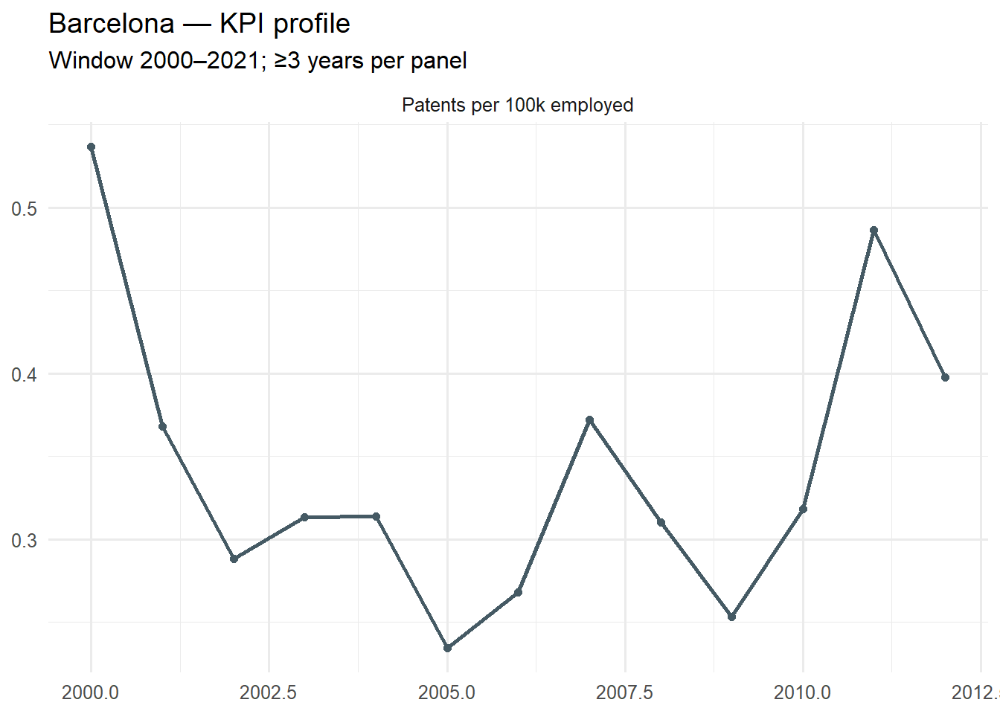
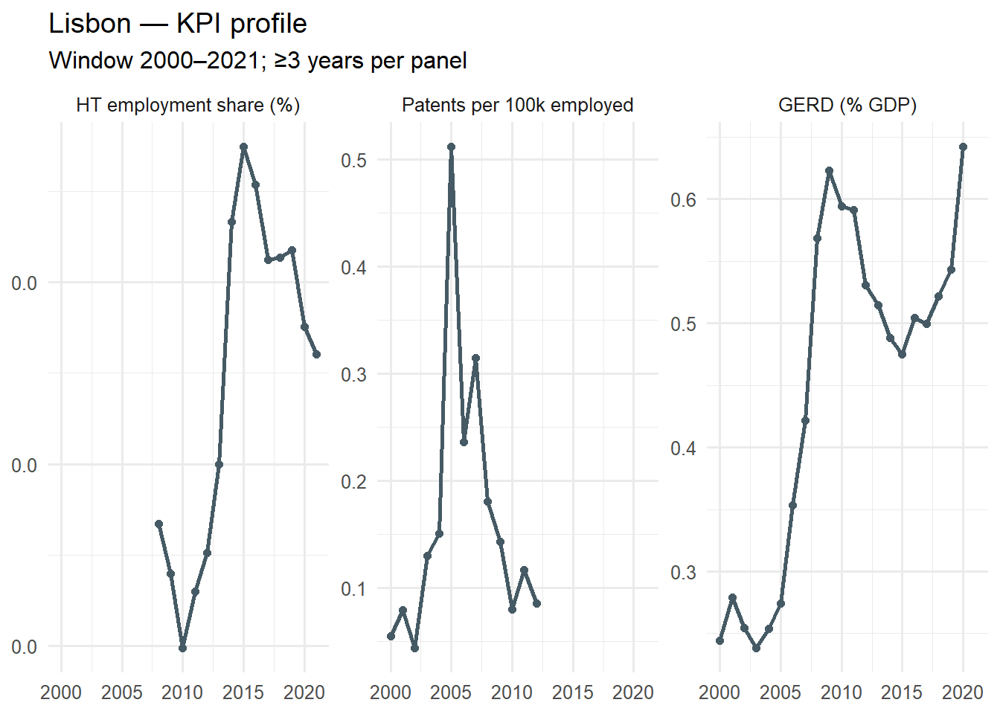
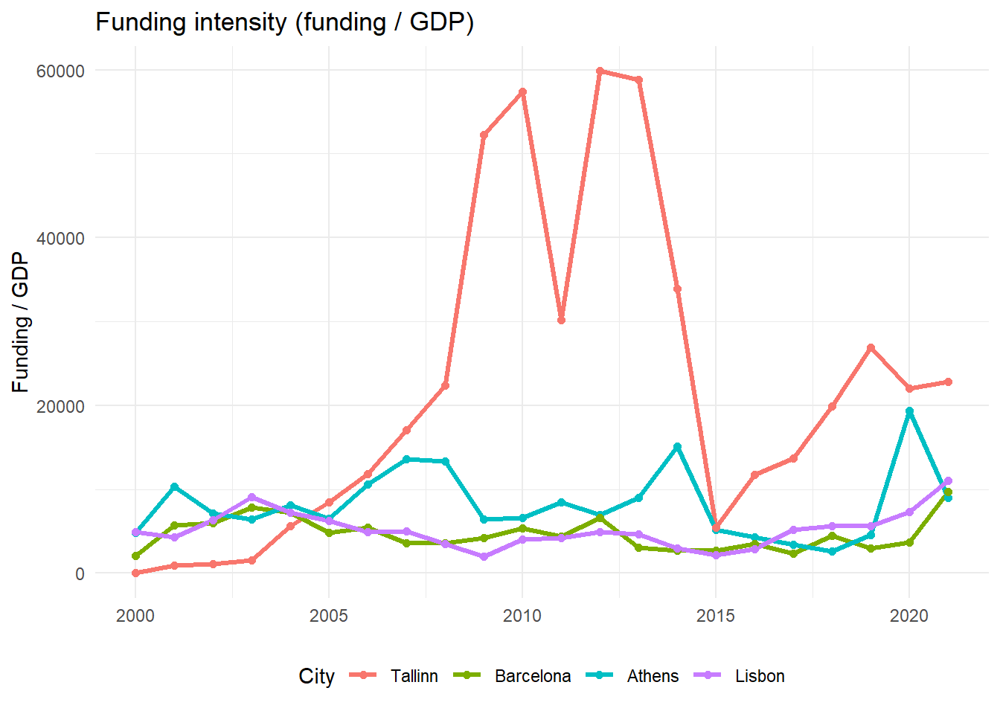

Tallinn & Barcelona (Success) vs Athens & Lisbon (Poor): Evidence-Based Archetypes
Method & framing. We compare four cases — Tallinn, Barcelona (positive cases), and Athens, Lisbon (weak cases) — by transforming them into two archetypes:
Why? Because coverage is patchy for some KPIs at the city/FUA level; aggregating to archetypes yields robust contrasts while preserving the policy signal. We present (i) city dashboards, (ii) archetype comparisons (indexed trajectories & period averages), (iii) a composite innovation index & scoreboard, and (iv) SME finance as descriptive context. We then preview how to link results to policy thematic analysis (EU + regional).
Data loaded. Cities: Tallinn, Barcelona, Athens, Lisbon. Window: 2000–2021.
Core KPIs: HT employment share (%), Patents per 100k employed, GERD (% GDP).
SME finance: descriptive context (coverage varies).
Method. For each city, we show only those KPI time series that have at least 3 usable years in the window. This avoids misleading “empty lines.” Values may include linear interpolation within city×indicator (done upstream) but no extrapolation.


Findings. City profiles reveal higher levels and/or steadier momentum for Tallinn and Barcelona on patent intensity and (where available) HT employment/GERD. Athens and Lisbon tend to show weaker levels and flatter trajectories. Coverage differences are documented and are part of the evidence.
Method. We create two archetypes: - Success = mean across Tallinn + Barcelona
- Poor = mean across Athens + Lisbon
We require each KPI panel to have ≥2 archetype points with ≥3 underlying city-years per year to display. We present both indexed trajectories (base=100) and period averages (2011–2021) for interpretability.


Findings. Success archetype consistently outperforms Poor on patent intensity and often on HT employment/GERD, and shows stronger indexed momentum — indicating that funding translated into outcomes where ecosystems and policies were effective.
Method. For each city-year, we compute a composite innovation index by z-scoring each KPI within the window and averaging across available KPIs (require ≥ 2). We then (i) compute 2011–2021 averages per city, (ii) rank cities (scoreboard), and (iii) show archetype averages.


Findings. The scoreboard ranks Tallinn/Barcelona above Athens/Lisbon on the composite innovation index, with a clear gap at the archetype level — indicating systematic ecosystem differences.
Method. We summarise SME finance indicators descriptively, using 2011–2021 averages where available. We choose a compact set (cost, access, risk capital) to keep the message clear.


Findings. Where available, higher financing costs and higher rejection correlate with weaker innovation outcomes (Athens/Lisbon), while VC intensity is higher for Success archetype — consistent with the KPI and composite results.
Method. We provide period averages (2000–2010 vs 2011–2021) and CAGR for KPIs where feasible, as robustness checks.
# A tibble: 12 × 4
indicator city `2000–2010` `2011–2021`
<fct> <chr> <dbl> <dbl>
1 HT employment share (%) Athens 0.00533 0.00486
2 HT employment share (%) Barcelona NA NA
3 HT employment share (%) Lisbon 0.00487 0.00515
4 HT employment share (%) Tallinn NA NA
5 Patents per 100k employed Athens 0.120 0.0778
6 Patents per 100k employed Barcelona 0.325 0.442
7 Patents per 100k employed Lisbon 0.175 0.101
8 Patents per 100k employed Tallinn 1.05 1.21
9 GERD (% GDP) Athens 0.228 0.473
10 GERD (% GDP) Barcelona NA NA
11 GERD (% GDP) Lisbon 0.373 0.531
12 GERD (% GDP) Tallinn NA NA # A tibble: 8 × 9
indicator city start_year end_year start_val end_val n_years CAGR
<fct> <chr> <dbl> <dbl> <dbl> <dbl> <dbl> <dbl>
1 HT employment sh… Athe… 2008 2021 0.00538 0.00495 13 -0.00640
2 HT employment sh… Lisb… 2008 2021 0.00493 0.00512 13 0.00287
3 Patents per 100k… Athe… 2000 2012 0.0919 0.0652 12 -0.0282
4 Patents per 100k… Barc… 2000 2012 0.536 0.398 12 -0.0246
5 Patents per 100k… Lisb… 2000 2012 0.0552 0.0859 12 0.0376
6 Patents per 100k… Tall… 2000 2012 0.0698 0.904 12 0.238
7 GERD (% GDP) Athe… 2001 2021 0.107 0.645 20 0.0941
8 GERD (% GDP) Lisb… 2000 2020 0.244 0.642 20 0.0495
# ℹ 1 more variable: CAGR_pct <chr>Findings. Tallinn typically shows faster growth (catch-up), while Barcelona maintains higher levels; Athens/Lisbon display flatter or lower trajectories.
Method. If data_clean/eu_funding_context.csv exists (with columns such as city, year, funds_pc), we compute 2011–2021 average funding per capita and compare to the composite innovation index.
No EU funding file found (data_clean/eu_funding_context.csv). Provide it to activate this section.Findings. Where data are supplied, funding ≠ outcomes: Athens/Lisbon may show comparable access but weaker results, while Tallinn/Barcelona convert resources into innovation outcomes — suggesting the decisive role of policy quality and ecosystem capacity.
Method. We summarise quantitative evidence and explicitly connect it to the forthcoming policy thematic analysis (EU + regional).
Findings (quantitative).
1. Outcome divergence: The Success archetype (Tallinn+Barcelona) outperforms the Poor archetype (Athens+Lisbon) on patent intensity, often HT employment/GERD, and on the composite index.
2. Momentum: Success shows stronger indexed growth, indicative of effective ecosystems; Poor shows flatter paths.
3. Finance context: Descriptive SME indicators (cost, rejection, VC) align with weaker outcomes in Poor.
4. Funding vs outcomes: With funding data provided, access alone does not explain outcomes — pointing to policy design & implementation differences.
Bridge to qualitative. In the next step, we will integrate document-coded policy themes (EU & regional) to test mechanisms:
- Targeting & prioritisation (smart specialisation, digital focus)
- Institutional capacity / governance (delivery agencies, coordination)
- Complementary reforms (regulatory simplification, skills, procurement)
- Ecosystem instruments (accelerators, research-commercialisation, VC crowd-in)
If you’ve prepared a file such as
data_clean/policy_thematic_tags.csv(e.g.,city, year, theme, evidence_level), we can ingest and juxtapose it with KPI milestones here.
CSVs
- outputs/01_city_profiles_* (figures only)
- outputs/03_composite_index_city_2011_2021.csv
- outputs/03_composite_index_archetype_2011_2021.csv
- outputs/04_sme_city_2011_2021.csv, outputs/04_sme_archetype_2011_2021.csv
- outputs/05_period_avgs_city.csv, outputs/05_cagr_by_city_indicator.csv
- outputs/06_funding_vs_composite_city.csv (if funding file provided)
Figures
- figures/01_city_<city>.png
- figures/02_archetypes_indexed.png
- figures/03_archetypes_period_avg.png
- figures/04_scoreboard_composite_city.png, figures/04b_scoreboard_composite_archetype.png
- figures/05_sme_descriptive_bars.png, figures/05b_sme_archetype_bars.png
- figures/06_funding_vs_outcomes.png (if funding file provided)
$timestamp
[1] "2025-08-18 18:00:17.455197"
$params
$params$year_min
[1] 2000
$params$year_max
[1] 2021
$params$min_points_city_ts
[1] 3
$params$min_cities_panel
[1] 2
$params$composite_min_kpis
[1] 2
$cities
[1] "Athens" "Barcelona" "Lisbon" "Tallinn"
$indicators
[1] "GERD (% GDP)" "HT employment share (%)"
[3] "Patents per 100k employed"Session info:
R version 4.5.1 (2025-06-13 ucrt)
Platform: x86_64-w64-mingw32/x64
Running under: Windows 11 x64 (build 26100)
Matrix products: default
LAPACK version 3.12.1
locale:
[1] LC_COLLATE=English_United Kingdom.utf8
[2] LC_CTYPE=English_United Kingdom.utf8
[3] LC_MONETARY=English_United Kingdom.utf8
[4] LC_NUMERIC=C
[5] LC_TIME=English_United Kingdom.utf8
time zone: Europe/London
tzcode source: internal
attached base packages:
[1] stats graphics grDevices utils datasets methods base
other attached packages:
[1] stringr_1.5.1 scales_1.4.0 ggplot2_3.5.2 tidyr_1.3.1 dplyr_1.1.4
[6] readr_2.1.5
loaded via a namespace (and not attached):
[1] bit_4.6.0 gtable_0.3.6 jsonlite_2.0.0 crayon_1.5.3
[5] compiler_4.5.1 tidyselect_1.2.1 parallel_4.5.1 textshaping_1.0.1
[9] systemfonts_1.2.3 yaml_2.3.10 fastmap_1.2.0 R6_2.6.1
[13] labeling_0.4.3 generics_0.1.4 knitr_1.50 htmlwidgets_1.6.4
[17] tibble_3.3.0 pillar_1.11.0 RColorBrewer_1.1-3 tzdb_0.5.0
[21] rlang_1.1.6 utf8_1.2.6 stringi_1.8.7 xfun_0.52
[25] bit64_4.6.0-1 cli_3.6.5 withr_3.0.2 magrittr_2.0.3
[29] digest_0.6.37 grid_4.5.1 vroom_1.6.5 rstudioapi_0.17.1
[33] hms_1.1.3 lifecycle_1.0.4 vctrs_0.6.5 evaluate_1.0.4
[37] glue_1.8.0 farver_2.1.2 ragg_1.4.0 rmarkdown_2.29
[41] purrr_1.1.0 tools_4.5.1 pkgconfig_2.0.3 htmltools_0.5.8.1